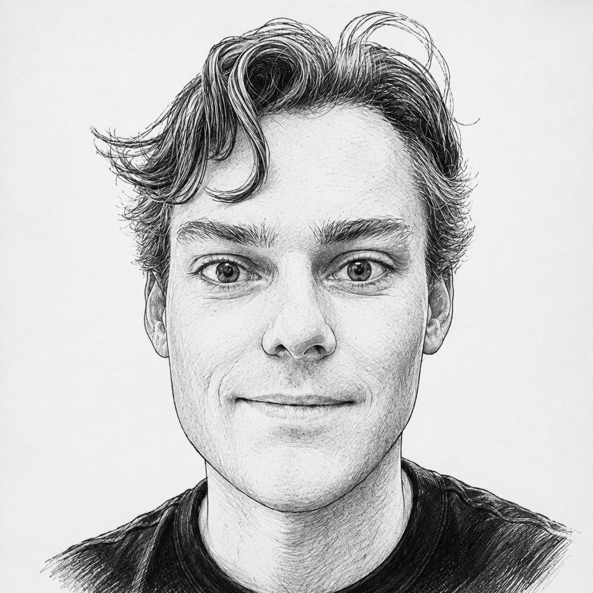

About me
I work at the seam between silicon and cosmology — turning raw pixels from the Vera C. Rubin Observatory into measurements precise enough to constrain dark energy.
I am a Postdoctoral Research Associate at the Kavli Institute for Particle Astrophysics and Cosmology (KIPAC) and the Center for Decoding the Universe (C4DU), at SLAC National Accelerator Laboratory and Stanford University.
I lead Instrument Signature Removal (ISR) and sensor calibration for the LSST Science Pipelines at the Vera C. Rubin Observatory: the layer of the Rubin data management system that converts LSSTCam's 3.2-gigapixel raw output into science-ready images. That work spans detector-level physics — the brighter-fatter effect, charge transfer inefficiency, crosstalk, bias and dark structure, stray light, and the nonlinear behaviour of thick fully-depleted CCDs — and the pipeline architecture, calibration products, and verification strategy that carry those corrections into every downstream measurement Rubin will make over the next decade.
Every systematic left in a pixel becomes a systematic in a cosmological parameter. My interest is in closing that loop end to end.
The other half of my work is on the science side of that loop. Within the LSST Dark Energy Science Collaboration I contribute forward models of image systematics to the Pixel-to-Object working group, and I work on weak gravitational lensing and galaxy cluster cosmology — shear estimation with metadetection, PSF modelling and diagnostics, star–galaxy separation, and photometric characterization of cluster fields. Recent work includes prompt-coadd templates for LSST difference imaging and alerts, multi-method machine-learning classification on DP2, and cross-survey forced photometry between Roman and Rubin.
I was previously part of the LSSTCam electro-optical testing and commissioning campaigns at SLAC and a member of the ComCam on-sky calibration (TAXICAB) team. I earned my Ph.D. in physics at UC Irvine in 2024, where I also applied deep learning to models of diffuse Galactic γ-ray emission for Fermi-LAT and its implications for the Galactic Center excess, and my B.S. at UC Davis, working on liquid-xenon direct-detection dark matter experiments (LUX, LZ, DAX).
Beyond the pipeline, I co-founded the KIPAC-Chile Engagement Program and organize workshops on Rubin's science and its long-term future, including Rubin 2036.